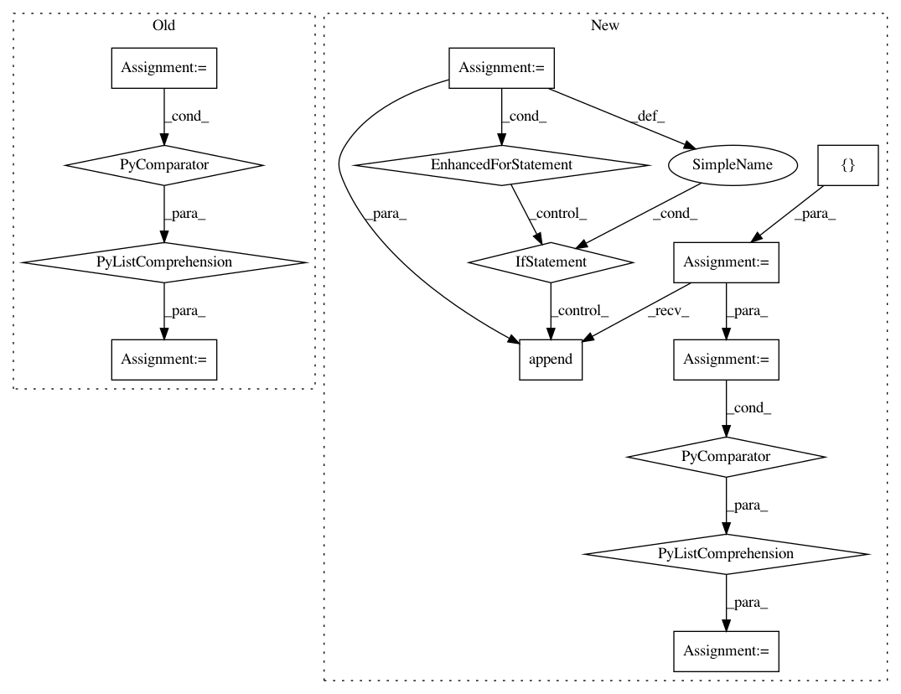

f522e894852f28da0d6b9441ce8e49f486dfbc5f,conceptnet5/vectors/transforms.py,,choose_small_vocabulary,#,149
Before Change
- are not in ConceptNet
concepts = set(line.strip() for line in open(concepts_filename))
small_vocab = [term for term in big_frame.index if term.count("_") < 1 and term in concepts]
return small_vocab
def make_big_frame(frame, language):
After Change
- are not frequent
concepts = set(line.strip() for line in open(concepts_filename))
vocab = []
for term in big_frame.index:
if "_" not in term and term in concepts:
frequency = word_frequency(uri_to_label(term), language, wordlist="large")
vocab.append((term, frequency))
small_vocab = [term for term, frequency in sorted(vocab, key=lambda x: x[1], reverse=True)[
:50000]]
return small_vocab
def make_big_frame(frame, language):
In pattern: SUPERPATTERN
Frequency: 3
Non-data size: 14
Instances
Project Name: commonsense/conceptnet5
Commit Name: f522e894852f28da0d6b9441ce8e49f486dfbc5f
Time: 2017-06-16
Author: joanna.teresa.duda@gmail.com
File Name: conceptnet5/vectors/transforms.py
Class Name:
Method Name: choose_small_vocabulary
Project Name: commonsense/conceptnet5
Commit Name: 952f26f1f16ac30315f799e163106a688fc05cb7
Time: 2018-05-14
Author: joanna.teresa.duda@gmail.com
File Name: conceptnet5/vectors/transforms.py
Class Name:
Method Name: choose_small_vocabulary
Project Name: bambinos/bambi
Commit Name: e2502957ebe993c13fd84af53dea1a9e71c0d5ae
Time: 2020-10-30
Author: aloctavodia@gmail.com
File Name: bambi/models.py
Class Name: Model
Method Name: plot_priors